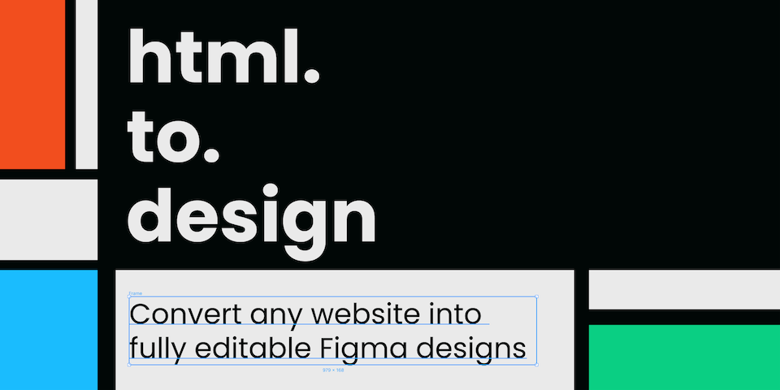

Above the fold optimizations
You want images above the fold to arrive as soon as possible.
Non-progressive JPEG => Progressive JPEG

Transparent PNG => WebP

Non-transparent PNG => Progressive JPEG

JPEG in picture tag => no sources required
The fold is marked here.
Everything after that is "below the fold"
JPEG below the fold